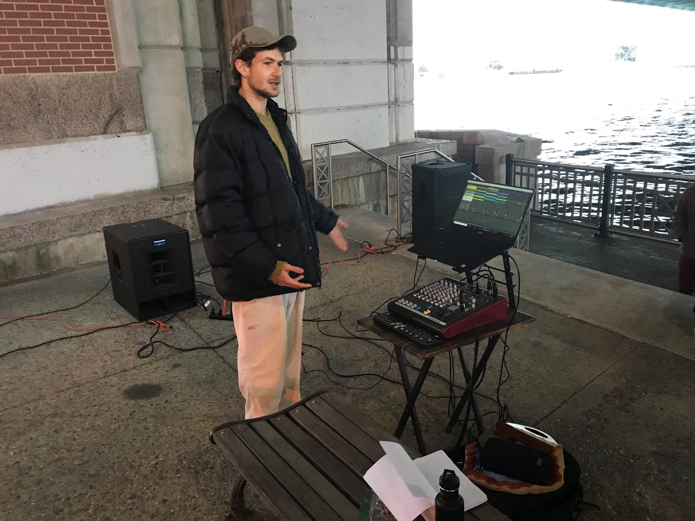
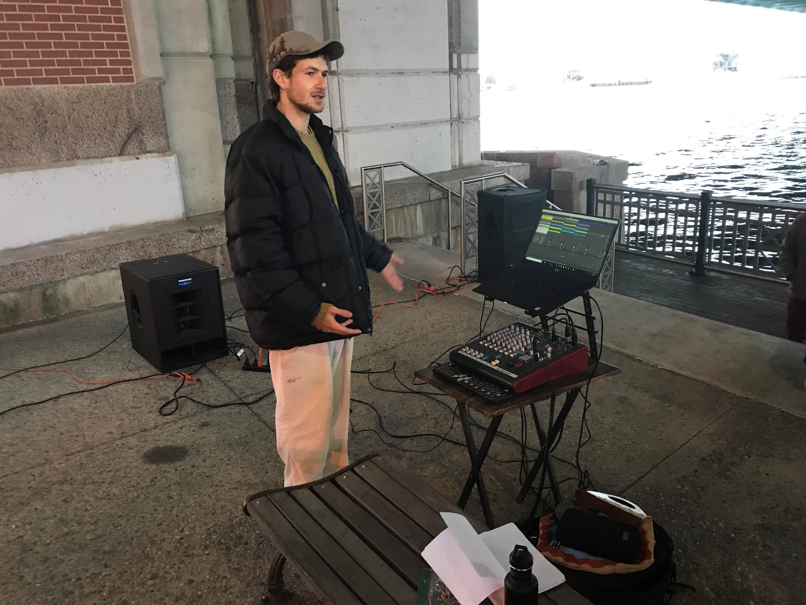
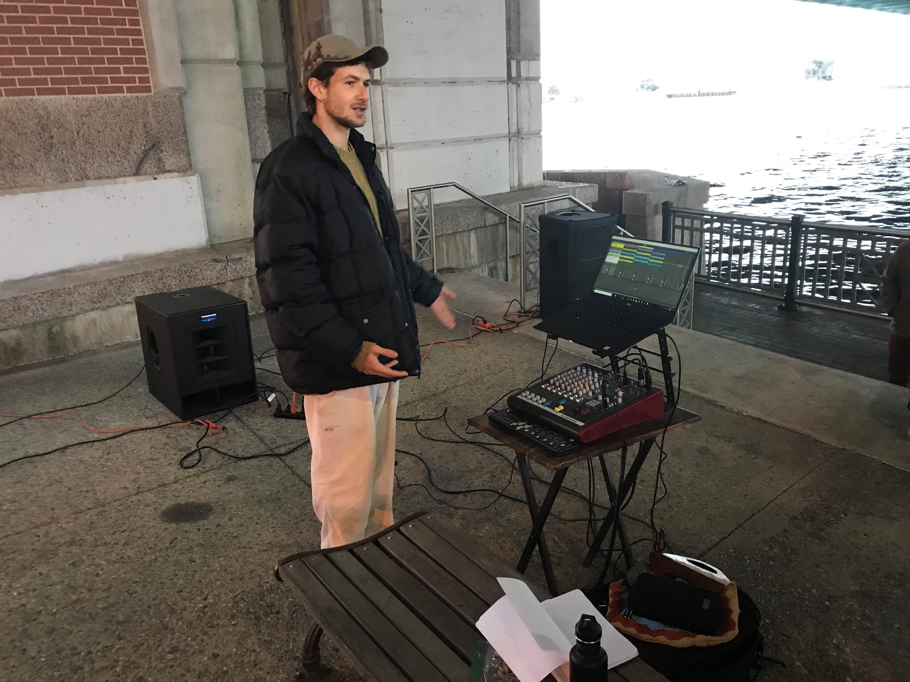

“The sound of a car door slamming was not a sound. It was the sound of a car door slamming, and once you accepted this, you had to ask: Whose car? What kind of car? Where is this car? What color is the car?”
- Jim O’Rourke, speaking of Luc Ferrari
There’s a circumference, a median, a bridge. Before they patch up last winter’s potholes, they must internalize an idea of speed. Flat surfaces are integral to capitalism's geometry. There are parking lots, and there’s also the open road (an oxymoron). “Maximum circulation coincides with maximum control.” There are echoes, then inundations. The circumference falters, but expands into your perceptual space. You warm up, shuffling around ambience. The highway prefers haphazard plateaus to sleep. Distant machinations become intimate in the most unexpected and direct ways. The horn continues, you turn on the radio.
Road Sounds began as a “sonic ethnography” of transportation infrastructure in New England. Here it takes a different form. I think of this as my road journal, an impressionistic register of speed as formalized in material and ideological technologies of transportation. The recordings are uncut and unprocessed. This is not to say that they are objective documents, only that they present durations of time, rather than objects of sound. These are descriptive documents, whose composition runs parallel to specific flows and events. There are no soundscapes, there is no immersion: just a few opportunities to listen to something.
1 Approaching That Which Does Not Sleep, Part 1
2 Space 1, I-95 Median in Attleboro
3 Approaching That Which Does Not Sleep, Part 2
4 Space 2, Parking Garage in Salem, Activated by a Horn
5 Approaching That Which Does Not Sleep, Part 3
6 Car Parts Cooling at Different Rates in Jamestown
7 Space 3, Platform in Providence
Mastered by Taku Unami.
This project was originally my undergraduate thesis. Gruenrekorder published a modified version of this essay, along with an excerpt of the album, as part of their online magazine Field Notes.
Thesis abstract for “Road Sounds: A Sonic Ethnography of Transportation Infrastructure in New England.”
This project is a study of transportation infrastructure, how it sounds, and how people hear it. I write with and against R. Murray Schafer's concept of "the soundscape," a dominant metaphor through which scholars (and many musicians) understand the relationship between sound and place. Rather than taking soundscapes as something “out there,” ready for apprehension, I argue for a study of cultural fields through sound, building off the work of Steven Feld and Ernst Karel. I contend that unprocessed location audio has unique affordances in this domain because it presents durations of time, rather than objects of sound, and so refocuses attention towards the recording situation and one's own listening patterns. This is my antidote to the soundscape's over-determined separation between things, spaces, vibrations, and cultures of listening.
I'm also concerned with working against morally charged accounts of our contemporary "soundscape," in which traffic din is an archetype of undesirable noise. The sounds of cars are the noise-floor of urban life and as such, they are a constant aesthetic impingement. One quintessentially modern response to noise has been to expand the category of music, which has proven infinitely pliable; preceding the Futurist's aggrandizement of war machinery and industrial sounds was Thoreau's appreciation of humming telegraph wires. Even in 1851, he expressed the now-common idea that "every sound is music now." As such, I'm not invested in treading over this ground again. Rather, my guiding question has been what listening positions and material histories these sounds index. For example, a passing car on a freeway leaves a tonal trail that points towards the ultrasmooth asphalt beneath it and a three hundred year lineage of terraforming and material development in the service of speedy commerce. We can filter this sound out (and this may very well be desirable!), and we can listen to it as music, but we can also pay attention to what conditions of possibility precede it.
